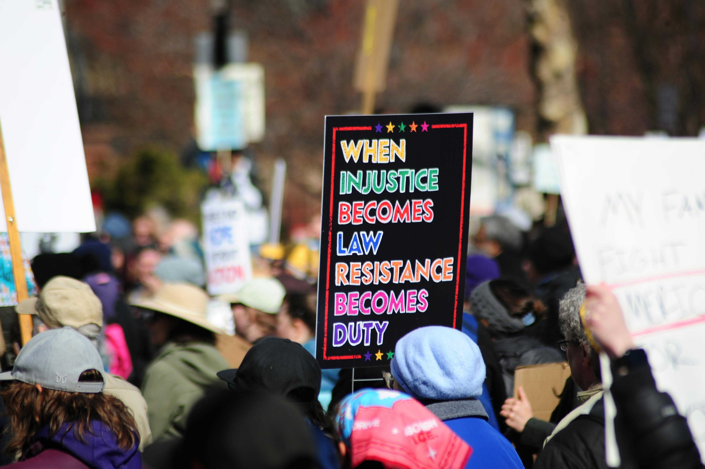

O Exílio
Conveniente
Em que os que convocaram prosperam longe
e os que atenderam pagam perto
"Todos os animais são iguais, mas alguns animais são mais iguais que outros."
George Orwell — A Revolução dos Bichos
Lisboa tem uma qualidade rara entre as capitais europeias: absorve os que chegam de fora sem os interrogar sobre o que deixaram para trás. É uma cidade que aprendeu, ao longo de séculos de ir e vir de povos e naufrágios e impérios que terminaram, que as perguntas sobre origem são menos interessantes do que as perguntas sobre destino. Os que chegaram naquele outono — aquela meia dúzia de figuras do Movimento de Granvia que havia desembarcado em intervalos de dias, em voos diferentes, com bagagens de mão que sugeriam estadias longas mas ainda não chamavam de mudança — encontraram na cidade uma hospitalidade que não era cumplicidade, era simplesmente indiferença bem temperada.
O apartamento de Vítor Salave ficava no Chiado, num prédio de fachada azulejada que os proprietários haviam restaurado com o dinheiro do turismo digital. Salave havia chegado primeiro, três dias antes da Noite da Esplanada. A esposa havia chegado dois dias antes ainda. O apartamento havia sido reservado seis semanas antes da data, por um endereço de e-mail que não continha o nome de nenhum dos dois.
Nos primeiros dias, Salave manteve os perfis digitais em silêncio. Era a única precaução que havia tomado — não por medo do Tribunal de Granvia, cujo alcance sobre cidadãos em solo europeu era juridicamente limitado e praticamente inexistente, mas porque o silêncio, naquele momento, era mais valioso do que qualquer declaração. O silêncio criava mistério. O mistério criava especulação. A especulação criava audiência. E a audiência, quando Salave decidisse falar, estaria faminta o suficiente para engolir qualquer narrativa que ele escolhesse oferecer.
A primeira transmissão ao vivo após os Eventos aconteceu na terceira semana de exílio. Salave a fez do apartamento do Chiado, com a janela levemente aberta ao fundo para que os telhados de Lisboa fossem visíveis — um cenário calculado, porque os telhados de Lisboa comunicavam exílio com a dignidade que os exílios precisam ter para funcionar como narrativa de perseguição.
"Estou aqui porque Granvia não é segura para quem diz a verdade. Estou aqui porque as mesmas forças que prenderam o General perseguem todos os que ousam questionar. Não fugi. Escolhi lutar de onde posso lutar."
A transmissão teve quatrocentos e vinte mil visualizações nas primeiras doze horas. O algoritmo — aquele árbitro neutro que não distingue entre indignação e admiração desde que ambas produzam tempo de tela — amplificou com a impassibilidade de quem não tem moralidade para aplicar.
Naquele mesmo dia, no ginásio municipal da cidade de Pedra Seca, no interior de Granvia, o professor Aniceto Braga comparecia à décima segunda audiência do processo que havia sido aberto contra ele. Seus advogados haviam pedido pela quarta vez o arquivamento do processo por insuficiência de provas. O juiz havia marcado nova audiência para quarenta e cinco dias depois.
A geometria era simples e brutal. Quem havia convocado estava fora do alcance. Quem havia atendido estava dentro. E o sistema jurídico de Granvia — que havia encontrado setenta e dois mecanismos diferentes para não prender o Ministro da Fazenda do governo anterior durante doze anos de investigação por corrupção documentada — havia encontrado agilidade surpreendente para processar um professor aposentado que havia ficado do lado de fora dos edifícios cantando o hino nacional.
Em Granvília, Ernesto Cardoso não estava em Lisboa. Estava exatamente onde havia escolhido estar: no centro. No escritório do diretório nacional do Movimento, fazendo aquilo que fazia melhor do que qualquer pessoa que conhecia: organizando cadeiras.
Havia uma reunião marcada para aquela quinta-feira com os vinte e três presidentes estaduais do Movimento, e Cardoso havia passado a semana anterior telefonando para cada um deles, um por um, nas mesmas horas em que sabia que estariam mais receptivos — depois do almoço para os do Sul, antes do jantar para os do Norte. Era um detalhe que a maioria das pessoas acharia irrelevante. Para Cardoso, era exatamente o tipo de detalhe que distinguia quem administrava poder de quem apenas o exercia.
A pauta oficial da reunião era "reorganização interna em período de liderança ausente." A pauta real era mais simples: quem controlava o Movimento dali para frente. E a resposta já estava decidida antes de qualquer voto.
A reunião durou quatro horas. No final, Cardoso foi eleito coordenador provisório do Movimento "durante o período de impedimento do presidente fundador." A palavra provisório estava lá, visível, para qualquer um que precisasse de conforto. A palavra provisório, em política, durava exatamente o tempo que convinha a quem a havia colocado.
A dona Celeste Mourão havia votado no General nas duas eleições em que ele havia concorrido. Era vendedora de quitanda num mercado coberto de Granvília, sessenta e um anos, viúva. Havia acampado durante vinte e dois dias em frente ao quartel-general da cidade.
Não havia ido à Esplanada. Havia ficado no acampamento — a convocação havia chegado, ela havia lido, havia sentido aquela voz interior que as pessoas de fé chamam de discernimento e que as pessoas sem fé chamam de instinto. Havia ficado. E por isso não havia sido presa.
Começou com perguntas pequenas. Quem havia mandado aquela mensagem da Esplanada? Por que os canais haviam silenciado no exato momento do caos? Por que as figuras que convocavam estavam em Lisboa e não nas celas onde estavam o professor Aniceto e os outros mil e quatrocentos? Por que o Conselheiro Cardoso havia sido eleito coordenador do Movimento três meses depois de emitir nota de "profunda consternação"?
Perguntas pequenas. Mas perguntas pequenas, quando não encontram resposta, não somem — crescem.
Havia um canal digital — pequeno, sem patrocínio, gerido por um jornalista de vinte e oito anos chamado Marcos Vidal que havia coberto os acampamentos durante os setenta e três dias com uma câmera de celular e um caderno de anotações — que havia começado a fazer aquelas perguntas em voz alta. Com a precisão lenta de quem junta fatos verificáveis e os coloca em sequência sem declarar a conclusão, porque a conclusão, quando os fatos estão em sequência, aparece sozinha.
Vidal havia traçado uma linha do tempo. A data da reserva do apartamento do Chiado — anterior aos Eventos em seis semanas. A data do cancelamento dos perfis digitais — simultânea ao início do vandalismo. A rota do voo. O contrato de trabalho da esposa de Salave como assessora do diretório nacional do Movimento — firmado oito meses antes dos Eventos, com Cardoso como signatário pelo partido.
Vidal não havia feito acusações. Havia apresentado datas. Havia apresentado documentos públicos. Havia feito perguntas que qualquer jornalista teria o direito e a obrigação de fazer.
O canal tinha quarenta e dois mil seguidores quando publicou a linha do tempo. Tinha duzentos e sessenta mil três dias depois. Não porque duzentos e dezoito mil pessoas novas tivessem encontrado o canal — mas porque duzentos e dezoito mil pessoas que já tinham aquelas perguntas dentro delas haviam encontrado, finalmente, alguém que as formulava em voz alta sem ser pago para calar.
É a aritmética.
Quem pagou. Quem lucrou.
Quem estava lá. Quem não estava.
A dona Celeste Mourão assistiu à linha do tempo de Vidal numa tarde de quarta-feira, na quitanda, com o celular apoiado num saco de feijão enquanto atendia clientes nos intervalos. Assistiu duas vezes. Na segunda vez, pausou num frame específico: a data da reserva do apartamento de Lisboa, sobreposta ao calendário dos Eventos, sobreposta ao contrato da esposa de Salave com o partido, sobreposta ao silêncio simultâneo de todos os canais no momento exato do caos.
Ficou olhando para aquelas datas por um tempo. Depois ligou para a Gertrudes.
"Gertrudes. Você viu aquele vídeo do menino jornalista?"
A Gertrudes havia visto. Havia visto e havia relido três vezes o histórico de mensagens do dia da convocação, procurando o nome de quem havia encaminhado para ela, traçando a cadeia de quem havia encaminhado para quem.
"Vi" — disse a Gertrudes. E depois, depois de uma pausa do tipo que as mulheres de sessenta anos fazem quando estão reformulando dentro delas mesmas algo que tinham como certo: "Celeste. A gente foi usada."
Não era uma pergunta. Era aquela frase que chega depois de muito tempo de resistência interna — depois de todas as explicações alternativas terem sido tentadas e descartadas uma a uma — com a densidade quieta das coisas que, uma vez ditas, não voltam a não ter sido ditas.
Celeste não respondeu imediatamente. Guardou o celular no avental. Pesou duzentos gramas de feijão para uma cliente que esperava. Devolveu o troco sem contar, porque já sabia o valor de cor.
Depois pegou o celular de volta, abriu o canal de Vidal, e apertou seguir.